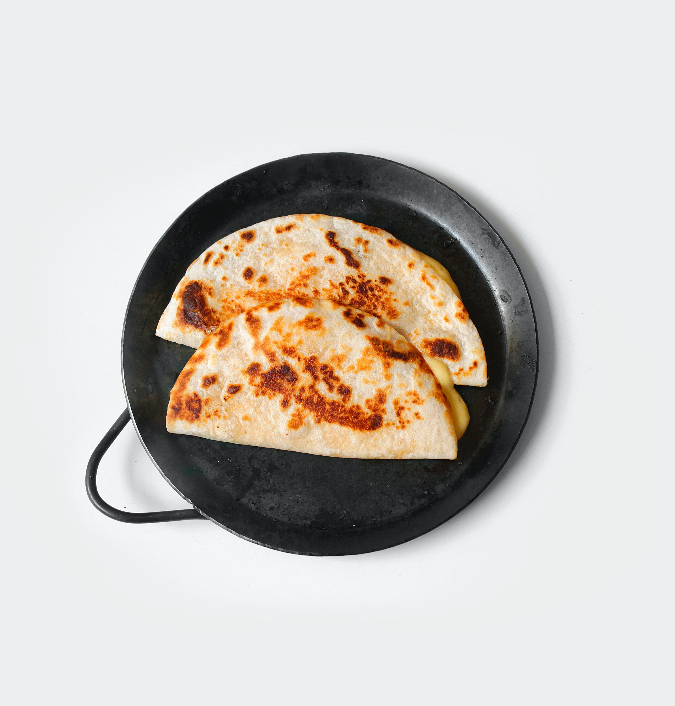

We have Tacobell at home

It's about to get serious
Picture this: you're at your house awaiting the arrival of a girl you've
recently been talking to. She is under the assumption that you're preparing
an incredible dinner. Only problem is, you can't cook.
Allow me to introduce you to the pièce de résistance. The single most powerful
weapon at the disposal of anyone, ever. This is... the cheese
quesadilla.
Ingredients
- A Quesadilla
- like a tablespoon of butter I guess
- that one Mexican style four cheese blend from Kraft
- First you're gonna want to heat the pan up to medium, go ahead
and toss in the butter while you're at it and coat the pan.
-
Once the butter is melted just toss the quesadilla in there and
maybe like a handful of cheese, I don't know, whatever feels right.
-
wait until the cheese starts to melt then fold it in half.
Leave it on each side until it's a nice golden brown. Enjoy!